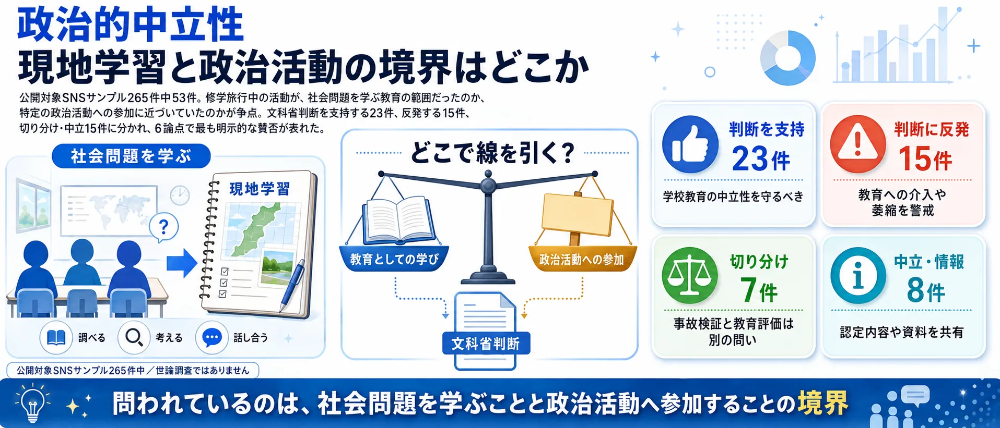
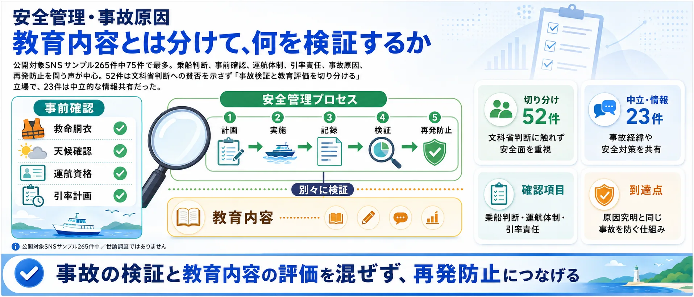
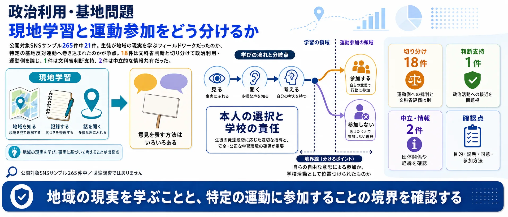

分析対象の意見
278件
事故、教育、政治、追悼を切り分けて比較
事故の検証と教育の評価、どの論点を重く見る？
Yahooリアルタイム検索で取得した公開投稿363件のうち、意見と判定した278件をAIが6つの論点に整理しました。世論調査ではなく、SNS反応サンプルの論点比較です。
事故、教育、政治、追悼を切り分けて比較
乗船判断、引率責任、事故原因と再発防止
事故検証と教育・政治評価を分ける声が最多
この話題には、事故の検証と教育内容への評価という別々の問いが重なっています。「文科省判断への賛否」だけでまとめず、SNSで語られた6つの論点を先に確認してから、自分が重く見る論点を選んでください。
⚖️ 政治的中立性 — 「修学旅行に政治活動は含まれるか」39件
修学旅行中の活動が教育として許される範囲を越えたのか。文科省が教育基本法違反を認定した核心論点。

🛟 安全管理・事故原因 — 「乗船判断と引率体制は適切だったか」88件
教育内容への評価とは切り離して、乗船判断・運航体制・引率責任・再発防止を問う論点。

🕊️ 追悼と被害者の尊厳 — 「政治論争より先に悼むべきか」40件
政治的対立より先に、亡くなった生徒への追悼と遺族への配慮を置くべきではないかという問い。

📚 平和教育の萎縮 — 「違反認定が沖縄平和学習を萎縮させるか」26件
教育基本法違反認定が、沖縄戦や基地問題を扱う教育現場の自己規制を生むかを問う。

📣 政治利用・基地問題 — 「教育か、運動への動員か」37件
生徒を基地反対運動へ巻き込んだのか、地域の現実を学ぶ正当な教育活動だったのかを問う。

📰 報道・行政対応 — 「事故と教育問題を結びつけた報道は適切か」48件
事故・安全管理・教育内容を報道・行政がどう関連づけ、どの事実を強調したかを問う。

使い方： 次の投票で「最も重く見る論点」と「文科省判断への評価」を選ぶと、SNS反応マップにあなたの位置が表示されます。
事故の責任、教育の中立性、平和教育への影響は別々に考えられます。まず最も重く見る論点を選び、次に文科省判断への総合評価を選んでください。
1最も重く見る論点を選ぶ （全2問）
※ サイト参加者の集計であり、世論調査ではありません。回答と、24時間の重複防止用に一方向変換した接続元情報をサーバーに保存します。
中心の「辺野古高校生死亡事故」を6つの論点が囲みます。扇の大きさは投稿数、中心からの距離は反応の強さ、点の色は文科省判断への評価です。点を選ぶと投稿の要旨を確認でき、クリックでXを開きます。

文科省の教育基本法違反認定を評価する声が59%で最多。修学旅行中の活動が教育として許される範囲を越えて特定の政治活動に接近していたかを問う論点で、疑問視する声は15%。
違反認定を支持し偏向教育にメスが入ったと評価。TV業界の放送法違反調査も求める
@anokorono_boku の投稿をXで見る
前川喜平氏のコラムを引用し、松本大臣の判断が教育基本法逸脱との指摘を支持する
@Kp6Cv の投稿をXで見る
教育内容の評価とは独立して、乗船判断・運航体制・引率責任・原因究明・再発防止を問う声が集中。意見88件のうち85件が「切り分け」スタンスで、文科省の教育認定とは別に事故責任を問うべきという立場が中心。
同志社国際高校の安全管理不備を批判し、担当教員と校長の責任追及と処分公表を求めている
@Wahaha11zo の投稿をXで見る
業務上過失致死の裁きを主張し、教育基本法問題は後回しにすべきと分離して論点を整理する
@Odorius の投稿をXで見る
政治的対立を超えて、亡くなった生徒への追悼と遺族への配慮を前に置く声。88%が切り分けスタンスで、対立よりも静かな悼みを優先する意見が中心。
遺族のnoteに言及し報道メディアがスルーしていると批判、平和学習に思想を押しつけるなと強く訴える
@seshiru0602 の投稿をXで見る
遺族のnoteを紹介し、学校対応の不誠実さと文科省の不適切認定を裏付けとして引用している
@basuta007 の投稿をXで見る
教育基本法違反認定によって沖縄戦・基地問題を扱う教育現場が萎縮しないかを問う。認定に疑問を示す声が38%、認定を評価する声が27%で、平和教育への影響をめぐる対立が見える。
死亡事故にもかかわらず平和教育の萎縮を危惧する抗議声明に反発し、むしろ萎縮すべきだと主張
@FwlpAj の投稿をXで見る
事故は警察に任せるべきで文科省の関与は行きすぎだと抗議活動の正当性を主張する
@s1omori の投稿をXで見る
生徒を基地反対運動に巻き込んだのか、共産党や玉城知事の関与をどう評価するか。92%が「切り分け・中立」で、文科省判断への評価とは別に関係者の責任・関与を問う声が中心。
共産党所属議員が船長だったことに触れ、国会でのヒアリング協力を要求する
@sado_no_umare の投稿をXで見る
無登録船への高校生動員と転覆事故の責任から玉城デニー知事を批判する
@bravo1q6 の投稿をXで見る
メディア報道の偏り・行政（知事・文科省）の対応姿勢を問う。90%が「切り分け・中立」で事実確認・報道批判が中心。NHKへの批判も、共産党機関紙への批判も共存している。
NHKが文科省判断に反発する側に偏っているとし、偏向報道であると批判
@otonanokensiki の投稿をXで見る
事故の本質を見誤り、文科相の教育基本法違反発言は命の政治利用だと批判
@NOSUKE0607 の投稿をXで見る
沖縄・辺野古を修学旅行で訪れていた高校生が死亡した事故をめぐり、学校の安全管理や旅行行程のあり方に加え、文部科学省が当該校の平和教育の内容を「教育基本法違反」と認定したことが大きな議論を呼んでいます。
文科省の認定を支持する立場からは「学校教育には政治的中立性が求められる」「特定の政治的立場に偏った教育は是正されるべきだ」という声があります。一方で批判する立場からは「事故の責任と教育内容の問題を結びつけるのは筋違い」「国の認定によって沖縄の平和教育・基地問題学習そのものが萎縮する」という懸念が示されています。
亡くなった生徒への追悼の声が広くあがる一方で、事故そのものの原因究明や再発防止と、教育内容への国の関与の是非という異なる論点が絡み合い、SNS上の反応も複雑に分かれています。
教育内容よりも、未成年を危険な現場に連れて行った引率・安全管理・再発防止を重く見る立場。
平和学習の範囲を超え、特定の政治活動に関わらせたのではないかと見る立場。
教育基本法違反認定が行きすぎで、基地問題や平和教育を扱う教育現場が萎縮すると見る立場。
断定、罵倒、未確認情報が混ざり、記事化には要約・確認が必要な反応。
| 政治的中立性 | 39 |
|---|---|
| 安全管理・事故原因 | 88 |
| 追悼と被害者の尊厳 | 40 |
| 平和教育の萎縮 | 26 |
| 政治利用・基地問題 | 37 |
| 報道・行政の伝え方 | 48 |
| 合計（意見投稿） | 278 |
| 文科省判断を評価 | 43 |
|---|---|
| 判断を保留・切り分ける | 216 |
| 文科省判断に疑問 | 19 |
| 合計（意見投稿） | 278 |
| 論点 | 評価 | 保留 | 疑問 | 計 |
|---|---|---|---|---|
| 政治的中立性 | 23 | 10 | 6 | 39 |
| 安全管理・事故原因 | 3 | 85 | 0 | 88 |
| 追悼と被害者の尊厳 | 5 | 35 | 0 | 40 |
| 平和教育の萎縮 | 7 | 9 | 10 | 26 |
| 政治利用・基地問題 | 2 | 34 | 1 | 37 |
| 報道・行政の伝え方 | 3 | 43 | 2 | 48 |
| 合計 | 43 | 216 | 19 | 278 |
| high（強い） | 118 |
|---|---|
| medium（中） | 149 |
| low（弱い） | 11 |
| 合計（意見投稿） | 278 |